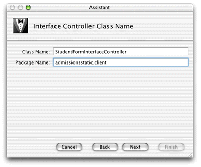
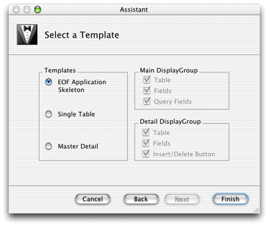
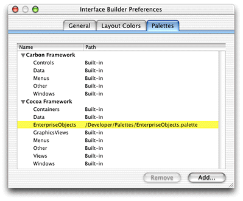
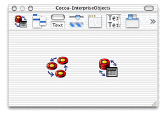

You create nondirect Java Client applications in Project Builder using the Java Client Application project type.
Make a new Java Client project called "AdmissionsStatic." Add the EOModel file from the last tutorial.
In the Interface Controller Class Name pane, the interface
controller class name should be StudentFormInterfaceController as
shown in Figure 6-1. Make sure the package name is admissions.client.
When creating Java Cilent interfaces, you must always specify the correct
package name.
Figure 6-1 Name the interface controller
Add the Admissions.eomodeld file
when prompted.
Choose the fourth option in the Choose Download Classes dialog (Download main bundle and custom framework classes).
In the Select a Template pane, select EOF Application Skeleton as shown in Figure 6-2.
Figure 6-2 Choose a template for the interface controller
For Java Client applications, Project Builder creates an Interface
Builder file (nib) and its associated Java class. By default, it's
grouped in the Interfaces group. Double-click StudentFormInterfaceController.nib to
open the file in Interface Builder.
Interface Builder needs a special palette to work with Java Client user interfaces. The EnterpriseObjects palette should load by default and appear in the Palettes pane of Interface Builder's preferences window as shown in Figure 6-3.
Figure 6-3 Interface Builder palettes
If it does not appear, click the Add button, navigate to /Developer/Palettes and double-click EnterpriseObjects palette. The palette should then appear in Interface Builder's palettes window as shown in Figure 6-4.
Figure 6-4 Enterprise Objects palette
